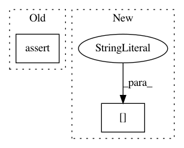

4cdc96ec820e5401987347a18bb943e1836ce447,examples/mujoco_all_ray.py,,run_experiment,#Any#Any#,29
Before Change
q_function=q_functions[0],
observations_preprocessor=preprocessor)
elif policy_params["type"] == "gmm":
assert not policy_params["reparameterize"], (
"reparameterize should be False when using a GMMPolicy")
policy = GMMPolicy(
observation_shape=env.active_observation_shape,
action_shape=env.action_space.shape,
K=policy_params["K"],
After Change
policy = GaussianPolicy(
observation_shape=env.active_observation_shape,
action_shape=env.action_space.shape,
hidden_layer_sizes=[policy_params["hidden_layer_width"]]*2,
reparameterize=policy_params["reparameterize"],
reg=1e-3)
elif policy_params["type"] == "lsp":
In pattern: SUPERPATTERN
Frequency: 3
Non-data size: 2
Instances
Project Name: rail-berkeley/softlearning
Commit Name: 4cdc96ec820e5401987347a18bb943e1836ce447
Time: 2018-11-20
Author: hartikainen@berkeley.edu
File Name: examples/mujoco_all_ray.py
Class Name:
Method Name: run_experiment
Project Name: apple/coremltools
Commit Name: cc6085567559b008c831d07fcb7c1f53bea9a699
Time: 2019-08-30
Author: shuoxin_lin@apple.com
File Name: coremltools/converters/nnssa/frontend/tensorflow/load.py
Class Name:
Method Name: load
Project Name: rail-berkeley/softlearning
Commit Name: 9caa24c58689c1d6f3d982f623ceab8f78e7362d
Time: 2018-10-20
Author: hartikainen@berkeley.edu
File Name: examples/mujoco_all_diayn.py
Class Name:
Method Name: run_experiment